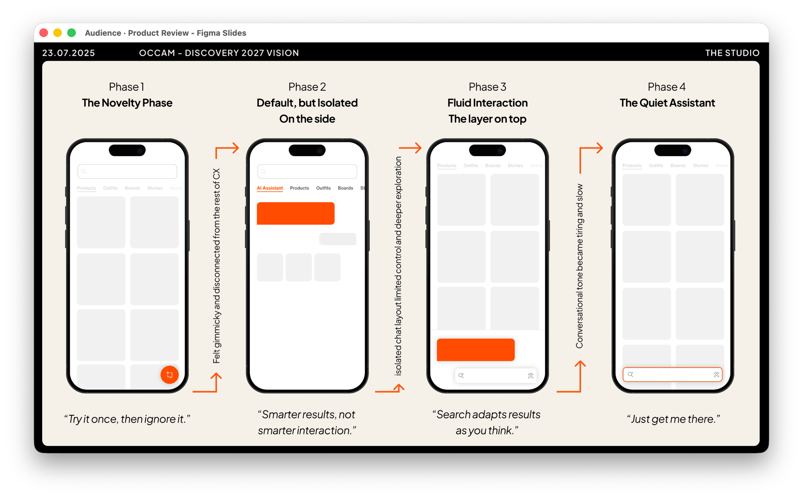
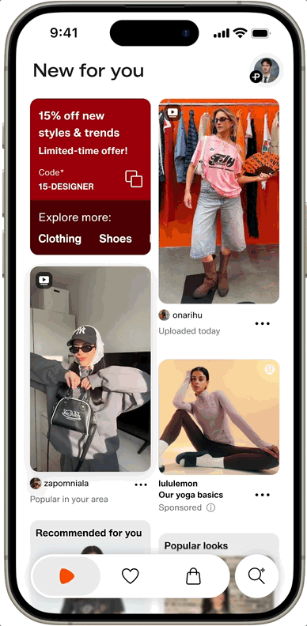
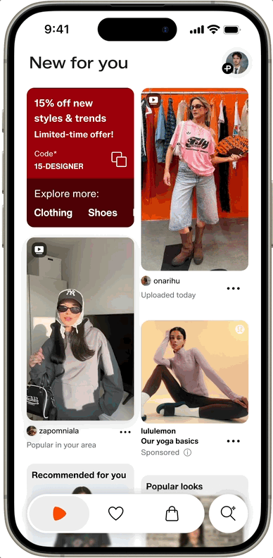
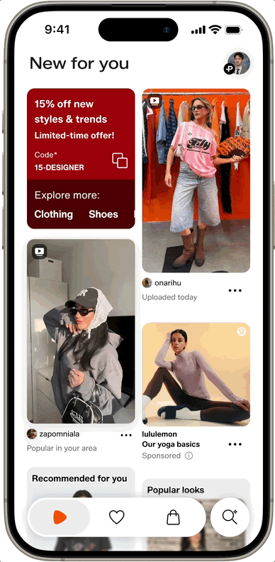

Zalando · 2025
Zalando's full discovery experience (search, feed, AI, inspiration) was built by five separate teams with no shared vision. The highest-potential opportunity in the product, unclaimed. I decided to take it on.

The PDP, the recommendations engine, the search surface, the feed, each owned by a different team, each with its own roadmap and its own version of what mattered. AI features were being added alongside discovery rather than woven into it. Design had a voice, but product and engineering decided what got prioritised. The result was a system that rewarded the incremental and pushed back on the bold, not because bolder solutions were wrong, but because no single team had the mandate to own them.
As part of the Studio, Zalando's design innovation lab, I had the freedom to work across team boundaries. Teams had ambitions but no shared north star, so I decided to build one. A 2-year end-to-end vision, not as a strategy document but as a working prototype. The approach was direct: talk to people, hear their frustrations beyond what the official roadmaps said, then go straight to showing.
The first decision was not to propose something new. Each team had their own vision, often overlapping, sometimes conflicting. I mapped what they were working toward, resolved the contradictions, removed the redundancies, and found what was genuinely shared. Three principles drove every decision:
Inspiration is everywhere · Search is a layer · Everything is a feed
These weren't brand language. They were decision tools: what gets merged, what gets cut, what gets dropped entirely. The AI assistant had been designed as a separate tab. "Search is a layer" meant it had to go, not as a feature, but as a mode woven into every surface.
I built a high-fidelity prototype with AI-integrated search, social commerce patterns, inspiration-to-purchase flows, and visual search — a functional SwiftUI app built with AI, not a Figma prototype — tested with 12 GenZ customers. Concrete enough that five separate teams could see themselves in it. Concrete enough to take to the Co-Founder.
SVPs and the Co-Founder backed it. The vision was folded into Zalando's Next Gen product roadmap. Design teams now walk into product conversations with Co-Founder-level backing and customer research on the table.
The research findings were clear. Feed-style discovery made users want to keep scrolling: "Zalando is more than an e-commerce." Iterative AI search felt like talking to a person in a store, not typing into a box. Visual search was called a game-changer: more trustworthy than anything external, with use cases nobody had imagined yet.
For designers working inside fragmented teams, this changed the conversation. Not just a vision on a slide, but a Co-Founder-backed, customer-tested reference they could bring into any product discussion.


